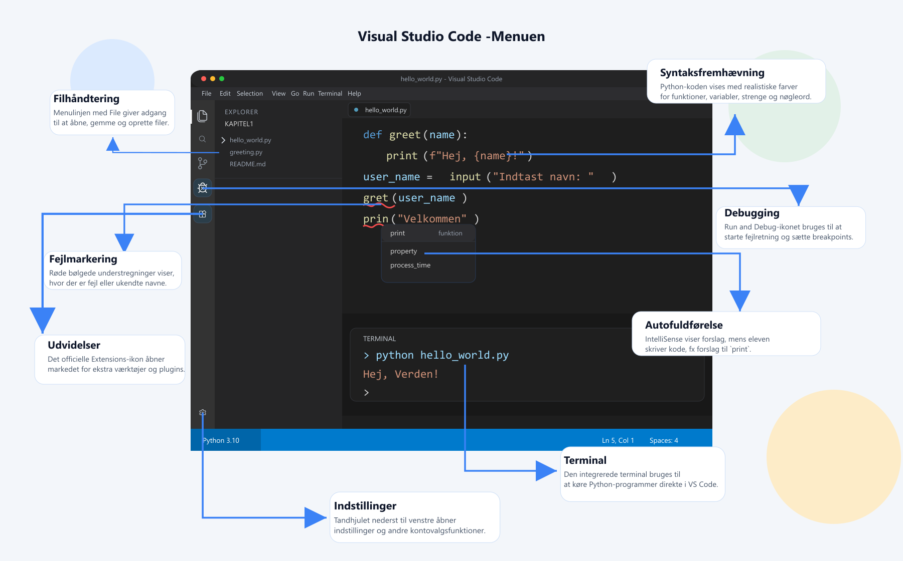

Lærebog · 16 kapitler
Introduktion til Python i Gymnasiet
Et dansk, praksisnært forløb fra de første programmer til arbejde med data, softwaredesign og kunstig intelligens.

Sådan er bogen bygget op
Et fundament at bygge videre på
De første fem kapitler introducerer grundlæggende programmering. De næste afsnit går videre med rekursion, objektorientering og regulære udtryk, inden bogen undersøger systemer, data, maskinlæring, webscraping og samarbejde gennem Git.
Bogen kræver ikke forudgående programmeringserfaring. Den lægger vægt på at skrive kode, afprøve ideer, rette fejl og forklare egne valg.

16 kapitler · læring i etaper
Find dit næste emne
Fold et kapitel ud for at se, hvad du møder. Titel og beskrivelse følger bogens aktuelle indhold.
16 kapitler
01Dit første programSæt et udviklingsmiljø op, skriv Python, og følg vejen fra instruktion til resultat.
Sæt et udviklingsmiljø op, skriv Python, og følg vejen fra instruktion til resultat.
Forslag til næste handling: Læs eksemplet, forudsig hvad koden gør, og afprøv en lille ændring.
Åbn læseprøven med bogens introduktion →02Variabler og deres datatyperGem og undersøg tal, tekst og andre værdier.
Gem og undersøg tal, tekst og andre værdier.
Forslag til næste handling: Læs eksemplet, forudsig hvad koden gør, og afprøv en lille ændring.
Åbn læseprøven med bogens introduktion →03Forgreninger og betinget udførelseLad et program vælge mellem forskellige handlinger.
Lad et program vælge mellem forskellige handlinger.
Forslag til næste handling: Læs eksemplet, forudsig hvad koden gør, og afprøv en lille ændring.
Åbn læseprøven med bogens introduktion →04Løkker og listerGentag instruktioner, og arbejd med samlinger af værdier.
Gentag instruktioner, og arbejd med samlinger af værdier.
Forslag til næste handling: Læs eksemplet, forudsig hvad koden gør, og afprøv en lille ændring.
Åbn læseprøven med bogens introduktion →05FunktionerDel programmer op i genbrugelige, navngivne opgaver.
Del programmer op i genbrugelige, navngivne opgaver.
Forslag til næste handling: Læs eksemplet, forudsig hvad koden gør, og afprøv en lille ændring.
Åbn læseprøven med bogens introduktion →06RekursionUndersøg funktioner, der løser et problem gennem mindre delproblemer.
Undersøg funktioner, der løser et problem gennem mindre delproblemer.
Forslag til næste handling: Læs eksemplet, forudsig hvad koden gør, og afprøv en lille ændring.
Åbn læseprøven med bogens introduktion →07Objektorienteret programmeringArbejd med klasser, objekter og sammenhænge mellem kode og model.
Arbejd med klasser, objekter og sammenhænge mellem kode og model.
Forslag til næste handling: Læs eksemplet, forudsig hvad koden gør, og afprøv en lille ændring.
Åbn læseprøven med bogens introduktion →08OOP og biblioteker i praksisSaml kode i større programmer med klasser og biblioteker.
Saml kode i større programmer med klasser og biblioteker.
Forslag til næste handling: Læs eksemplet, forudsig hvad koden gør, og afprøv en lille ændring.
Åbn læseprøven med bogens introduktion →09Regulære udtrykFind mønstre i tekst og bearbejd dem med Python.
Find mønstre i tekst og bearbejd dem med Python.
Forslag til næste handling: Læs eksemplet, forudsig hvad koden gør, og afprøv en lille ændring.
Åbn læseprøven med bogens introduktion →10Arkitektur for brugerhåndteringUndersøg hvordan systemer opdeler data, logik og præsentation.
Undersøg hvordan systemer opdeler data, logik og præsentation.
Forslag til næste handling: Læs eksemplet, forudsig hvad koden gør, og afprøv en lille ændring.
Åbn læseprøven med bogens introduktion →11Arkitektur for dataudtræk gennem APIArbejd med strukturerede data og dataudtræk gennem API'er.
Arbejd med strukturerede data og dataudtræk gennem API'er.
Forslag til næste handling: Læs eksemplet, forudsig hvad koden gør, og afprøv en lille ændring.
Åbn læseprøven med bogens introduktion →12MaskinlæringUndersøg data, modeller og klassifikation.
Undersøg data, modeller og klassifikation.
Forslag til næste handling: Læs eksemplet, forudsig hvad koden gør, og afprøv en lille ændring.
Åbn læseprøven med bogens introduktion →13WebscrapingFind og bearbejd struktureret indhold fra websider.
Find og bearbejd struktureret indhold fra websider.
Forslag til næste handling: Læs eksemplet, forudsig hvad koden gør, og afprøv en lille ændring.
Åbn læseprøven med bogens introduktion →14Test i PythonAfprøv kode systematisk, og brug fejl til at forbedre løsningen.
Afprøv kode systematisk, og brug fejl til at forbedre løsningen.
Forslag til næste handling: Læs eksemplet, forudsig hvad koden gør, og afprøv en lille ændring.
Åbn læseprøven med bogens introduktion →15Samarbejde gennem GitHubFølg ændringer og arbejd videre med kode i samarbejde med andre.
Følg ændringer og arbejd videre med kode i samarbejde med andre.
Forslag til næste handling: Læs eksemplet, forudsig hvad koden gør, og afprøv en lille ændring.
Åbn læseprøven med bogens introduktion →16OpgavesamlingVælg flere opgaver på tværs af bogens emner.
Vælg flere opgaver på tværs af bogens emner.
Forslag til næste handling: Læs eksemplet, forudsig hvad koden gør, og afprøv en lille ændring.
Åbn læseprøven med bogens introduktion →Ingen kapitler matcher din søgning.
Fem niveauer af AI-assistance
Gør rammerne for AI tydelige
Farvekodede niveauer viser forskellige grader af hjælp. Læs opgaven og aftal de rammer, der passer til undervisningsforløbet.
- Ingen generativ AIArbejd med bog, noter og samtale.
- AI finder kun fejlUndersøg fejl uden at få en færdig løsning.
- AI forklarer begreberBrug forklaringer og eksempler til forståelse.
- AI giver kodefeedbackFå respons på din egen kode, og vælg forbedringer.
- AI fremstiller kodeForstå, test og tilpas kodeforslag.
Prøv den første del